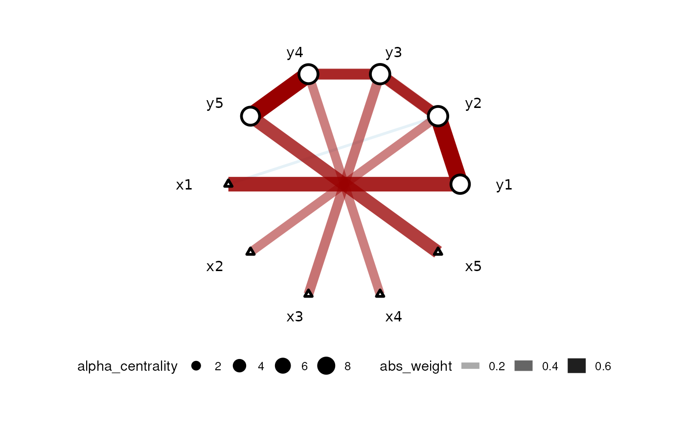

Horseshoe method for graphical structure inference
horseshoe(obj, Bbar = NULL, A = NULL, nu = 3, V = NULL, thr = 0.5)
| obj | The carlasso_out object from CARlasso |
|---|---|
| Bbar | Prior mean of regression coefficients, default all 0s |
| A | Prior precision of regression coefficients, default 1e-8 |
| nu | Prior degree of freedom of the Wishart on precision matrix |
| V | prior covariance matrix of the Wishart on precision matrix |
| thr | threshold for horseshoe inference, default 0.5 |
A carlasso_out object with learned binary adjacency matrix and multi-response linear regression MCMC out put
This method fits a linear regression with less informative prior on any parameters and compare the posterior mean with the LASSO result. If LASSO is comparably less than result without sparsity prior, we argue that the edge should be absent
set.seed(42) dt <- simu_AR1() car_res <- CARlasso(y1+y2+y3+y4+y5~x1+x2+x3+x4+x5, data = dt, adaptive = TRUE)#> Predictors will be centered. #> #> Algorithm set to be adapive. Assuming all hyper parameters are the same for beta #> #> Algorithm set to be adapive. Assuming all hyper parameters are the same for Omega's off diagonal entries #> #> Algorithm set to be adaptive. Assuming priors are all the same for Omega's diagonals #> #> Algorithm start... #> #> progress: #> #> #> done #>